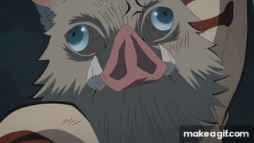
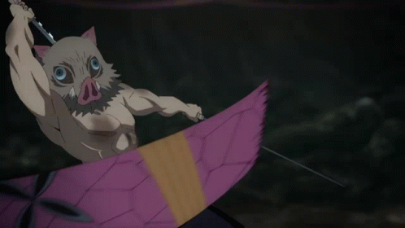
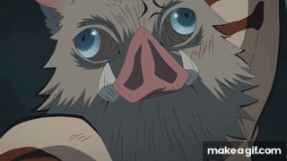
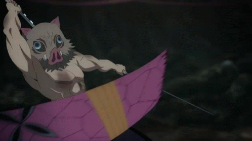

Inosuke Hashibira
História
Inosuke foi uma criança criada por javalis a maior parte de sua vida até adentrar na história de
Koyoharu Gotouge. Infelizmente, seu passado é bem triste e foi revelado que seu pai era extremamente
abusivo, o que levou sua mãe a fugir com ele ainda bebê. Mas sua mãe acaba sendo atacada por Doma, uma
das Luas Superiores de Muzan.
Sua mãe se viu encurralada no alto de um penhasco, mas conseguiu proteger seu filho antes de ser
devorada pelo demônio. É depois desse incidente que Inosuke acaba sendo criado por javalis na floresta.
Personalidade
A personalidade de Inosuke é extremamente extravagante. Ele é orgulhoso, temperamental e tem um certo
complexo de superioridade — frequentemente se declarando o espadachim mais forte e desafiando qualquer
um que entre em seu caminho. Também se estressa muito fácil, principalmente quando percebe que não está
sendo respeitado ou elogiado pelos outros.
O fato dele ser um brigão descontrolado faz com que o garoto frequentemente se coloque em risco. Afinal,
por ter certeza que seus adversários são mais fracos que ele, constantemente se coloca em apuros no
decorrer da história. Ele também é muito provocador, para que os outros lutem com ele (como fazia com
Tanjiro Kamado).
Habilidades
Inosuke possui algumas habilidades padrão, como força, resistência, velocidade e habilidade com armas
que o permite empunhar duas katanas de uma vez.
Outro truque conhecido do personagem é sua capacidade de mudar seus órgãos internos de lugar. Ao
reorganizar seus ossos, Inosuke consegue alcançar uma elasticidade sobre-humana que usa para se
esgueirar por fendas estreitas quando necessário. Mudar o lugar de seus pontos vitais também já salvou
sua vida em momentos dramáticos do anime.
E por morar tanto tempo nas montanhas, o garoto-javali acabou desenvolvendo um tato hipersensível, capaz
de sentir até mesmo mínimas variações de vibrações nos ambientes. Em certas batalhas, essa habilidade é
crucial para acelerar sua reação a inimigos velozes. Também abre uma gama de estratégias em equipe,
combinado com o olfato apurado de Tanjiro e a audição perfeita de Zenitsu.
 


